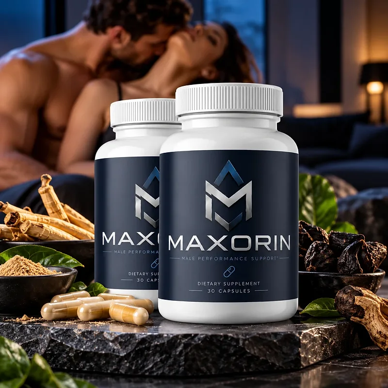
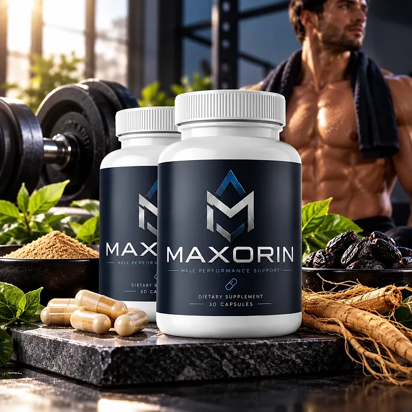
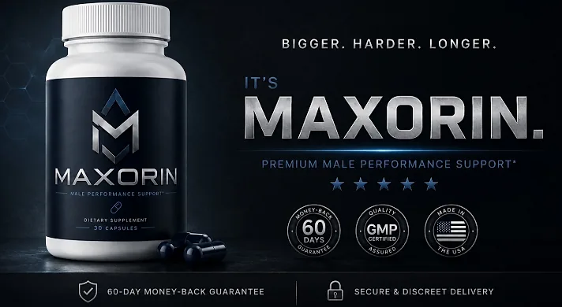

What Is Maxorin And How Does It Work?
Maxorin is a dietary supplement in capsule form designed to provide male performance support, stamina, and healthy blood flow for men who want to address the lower energy, drive, and endurance that can build up with age, stress, and busy routines through a natural, dependable approach — without complicated protocols or temporary quick fixes.
It utilizes a simple daily capsule that combines L-Citrulline, L-Carnitine, Pine Bark, Maca Root, Grape Skin, and Saffron, plus Niacin and Zinc to support circulation, energy, and male vitality, helping the body maintain its natural balance throughout the day.
The ingredients in Maxorin are amino acids, botanical extracts, a vitamin, and a mineral that, according to the label, form a male performance support formula, particularly for men who prefer one small capsule a day over multiple products or complicated plans.
Rather than acting as a short-lived artificial fix, Maxorin focuses on supporting circulation and energy: L-citrulline and pine bark are known for their role in nitric oxide and healthy blood flow, working gradually alongside daily routines.
With consistent daily use, a formula of this kind is intended to help with more energy, better endurance, and greater confidence, especially when combined with regular exercise, a balanced diet, good sleep, and moderate alcohol.
From a practical standpoint, Maxorin is a daily male performance capsule designed to support wellness from within — helping you feel energized, stay active, and remain in control of your health.
Distributed from Aurora, Colorado, according to the label, Maxorin is designed for regular daily use, with a formula listed on a full Supplement Facts panel, focusing on transparency, safety, and quality for men seeking a natural, non-prescription route to vitality.
Maxorin Ingredients
Every capsule of Maxorin provides 20 mg of Vitamin B3 (as Niacin), 125% of the Daily Value, 11 mg of Zinc (as Zinc Oxide), 100% of the Daily Value, and a 570 mg proprietary blend, as listed on the Supplement Facts panel:
L-Citrulline: An amino acid the body converts into arginine to produce nitric oxide, which supports healthy blood flow.
L-Carnitine: An amino acid compound that supports cellular energy production.
Pine (Pinus pinaster) Bark Extract: A source of antioxidant compounds that support circulation and healthy blood vessels.
Maca (Lepidium meyenii) Root Extract: An Andean root known for supporting stamina, drive, and natural energy.
Grape (Vitis vinifera) Skin Extract and Saffron (Crocus sativus) Stigma Extract: Botanicals that provide antioxidants and support mood and well-being.
Niacin and Zinc: A B vitamin that supports circulation and energy metabolism, and a mineral that supports normal testosterone levels in men.
Together, these ingredients are designed to support blood flow, energy, and male vitality from within. The label does not give the amount of each ingredient inside the blend. The other ingredients are hypromellose (vegetable capsule), microcrystalline cellulose, magnesium stearate, and silicon dioxide.
Maxorin is designed for daily use, offering a natural, non-prescription approach to supporting male performance, without stimulants or complicated routines.
Maxorin Side Effects
Maxorin is generally considered well tolerated and is designed for adult men of different ages and lifestyles who are looking for a safe, natural, and balanced approach to male vitality, especially those who prefer an easy one-capsule daily routine to support energy, drive, and confidence without resorting to risky solutions with severe side effects.
The label publishes a full Supplement Facts panel, with the vitamin and mineral doses and the total of the blend, and recommends consulting a physician before use, reinforcing transparency, safety, and reliability.
With no widespread reports of serious side effects, Maxorin is generally considered a well-tolerated option. A few points deserve attention: niacin can cause a harmless, temporary warm flushing of the skin in some people; L-citrulline and pine bark support blood flow, so men who take medication for blood pressure, heart conditions, or men's health should talk to a doctor first; and pine bark may add to the effect of blood thinners. It is not intended to diagnose, treat, cure, or prevent any disease, and individual results may vary.
According to the label, it is not for use by those under the age of 18 or by pregnant or nursing mothers, and anyone taking a medication or with a medical condition should consult a physician prior to use, ensuring it fits safely within their personal wellness plan.
Maxorin Dosage
The recommended Maxorin dosage is one capsule daily, as printed on the label, and it is designed to fit easily into a daily routine, making consistency simple and convenient. Formulated as an easy-to-swallow vegetable capsule, it requires no powders to mix, no drinks to prepare, and nothing to measure.
Taking the capsule at the same time each day, with a glass of water and a meal, makes the routine easy to remember and allows its ingredients to work consistently. Taking it with food may also help people who notice niacin flushing.
For best results, consistency is key. Each bottle contains 30 capsules, a one-month supply, and because circulation and energy support builds gradually, many men make it part of an ongoing routine, which the 3- and 6-bottle packages on the official website reflect.
There is no need for complex schedules or multi-step routines. One simple daily capsule is designed to build support gradually alongside regular exercise, a balanced diet, good sleep, and less stress. The label advises storing the bottle in a cool, dry place below 86°F (30°C) and not using it if the safety seal is damaged or missing.
As with any dietary supplement, it's important not to exceed the recommended dose and to check the label on your bottle. Maxorin works best when used regularly, combined with proper hydration, balanced nutrition, and healthy daily habits.
Maxorin – Refund Policy
You can order Maxorin with confidence, knowing that every order is backed by a 60-day money-back guarantee, according to the official policy. This allows you to try the formula and decide if it delivers the support you expect.
According to the return policy on the official website, you have 60 days from the date of purchase to request a refund. Contact the support team for return instructions before sending your package, and return all the bottles, whether empty or not, together with the packing slip. The customer pays the return shipping, which is not refundable.
How the refund process works: After contacting support, send all the bottles to RedRock Fulfillment, PO Box 12730, Ogden, UT 84412, with a note containing your full name, email address, and order ID. Once the package is received and inspected, the refund is processed to your original payment method, and you receive an email confirmation.
Customer Support Contact Information: support@getmaxorin.com or +1 (323) 395-2817, as listed on the official website and on the label; order status questions go to +1 323-348-1373.
Refund Processing Time: According to the policy, depending on your bank or card provider, it may take 5 to 10 business days for the refund to appear on your statement.
This refund policy is designed to give customers a clear and transparent experience when trying Maxorin.
Maxorin – Where To Buy
Maxorin is sold through its official website, so if you decide to try it, it's important to be careful about where you purchase it. The official website is the only sales channel the manufacturer lists, and it does not point to marketplaces such as Amazon, eBay, or Walmart.
Listings on third-party platforms may look similar but cannot be verified as authentic, raising concerns about safety, quality, and ingredient freshness. Products purchased outside the official source may not be covered by the 60-day guarantee.
For this reason, it makes sense to purchase Maxorin only through the official website. Buying directly from the official source ensures you receive the authentic original product, with access to customer support and the full guarantee. According to the official website, every package is a one-time purchase, with no rebill or membership, and orders are processed by BuyGoods.
To avoid counterfeit batches and ensure maximum quality, always verify that you are ordering from the official Maxorin website before completing your purchase.
To ensure you’re getting the authentic product, most users choose to visit the official website.
Is Maxorin A Scam?
Based on what the official website and the product label disclose, Maxorin does not appear to be a scam. It is a real capsule supplement, sold through an established retailer (BuyGoods), and formulated to provide male performance support, energy, and healthy blood flow as part of a consistent routine.
The ingredients used in Maxorin — L-Citrulline, L-Carnitine, Pine Bark, Maca Root, Grape Skin, and Saffron, plus Niacin and Zinc — are well known in men's wellness, and the label publishes a Supplement Facts panel with the vitamin and mineral doses and the total amount of the blend for transparency.
In addition to its formula, Maxorin lists a support email and phone numbers, and the label identifies the distributor in Aurora, Colorado, with a focus on clarity and simple returns.
The official website publishes no written customer testimonials, so this review does not quote any. A fair point of criticism is that the website is very small: the main address shows a page under construction and only the order page and policies are online, and the banner uses bold performance slogans that no supplement can guarantee. Results vary from person to person, and no supplement replaces a medical evaluation for persistent symptoms.
Maxorin is backed by a 60-day money-back guarantee, and the return steps and the return address are published on the official website, which gives customers a clear path if the product does not meet their expectations.
If you're looking for a simple daily capsule to support energy, drive, and confidence without complicated routines, Maxorin is worth considering — especially when purchased directly from the official website.
For those who want to verify product details or check current availability, the official Maxorin website remains the safest option.

Check Availability On Official Website
